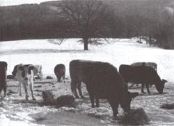

ANIMAL HUSBANDRY
Most livestock tolerate winter better in a three-sided shed than in a tight, unventilated barn.
WHEN READERS CAME TO US WITH QUESTIONS about protecting their animals' health through the harsh winter months, we went straight to an expert, Dr John Mettler Jr, D. V.M. Dr Mettler has practiced as a large-animal country vet for more than 41 years in rural New York State and is the author of two animal books, including one on horse care.
Q: A few years ago I started keeping beef cattle, a milk cow, a few hogs, sheep, and two horses on a farm in Vermont. Neighbors tell us that recent winters have been mild for this part of New England and that we're due for more normal weather with deep snow and below-zero temperatures in the coming months. Will this cause health problems, such as respiratory disease, in our livestock?
A: On August 20--five days earlier than normal and with great commotion-the wild geese located in my neck of the woods left their small breeding ponds and joined others on the larger ponds with their new offspring. The grackles, too, started to flock weeks earlier than normal, and there was frost on September 1. For those reasons, and remembering the up and down of mild to severe winters in the past 65-plus years, I'd tend to agree with your neighbors. If you want a more scientific prediction, listen to the warnings from atmospheric scientists about the possible effect of the cloud from the recent Philippine volcanic eruption.
If you had healthy livestock during these past few New England winters (rain at 34°F, mud instead of snow, and temperature fluctuations of 50 degrees within hours), they'll do just fine with a "real old-fashioned winter." Still, Mother Nature shouldn't be underestimated. It's important to know how to prevent weather- related winter health problems before they occur.
The two most important factors in livestock health are the effects, both internally and externally, of air and water: Both should be fresh and pure, and too much or too little of either will cause problems. All livestock suffer from the cold if they are wet. Cattle and horses, if given access to a three-sided, shed-type shelter open to the east or south, will stand under it during a cold rain, but will often be found outside, bedded down or feeding, on a cold clear night or day. Even with their backs covered with snow, the dry air trapped in their longhair coat insulates them from the cold (like the unmelted snow on the roof of a well-insulated house, it is an indication that the cow or horse is warm inside).
A tight but well-ventilated old cow barn that will stay above freezing if it is full of cows would not be the best place for a lone milk cow. Perhaps you could rearrange things and keep your sheep and/or horses with her. Keep in mind that your dairy cow will get along fine in a cold, open shed (as does a beef cow), but milking at below-freezing temperatures is not particularly comfortable for the human part of the operation.
Hogs are okay in cold weather, but should be bedded heavily enough in their hog house so that they have a warm place to lie. After a really heavy snowstorm, you'll want to shovel a path from the hog house to the feed trough so that your hogs won't become snowbound.
Too little water is more of a problem in cold weather than in hot-even a skim of ice over a water bucket may keep a horse from drinking. All animals drink more water and will do better if it is slightly warmed. A freeze-proof waterer is a good investment. You may construct one yourself, but be extremely careful to avoid voltage leaks that will discourage drinking or, if strong enough, even kill. Horses not drinking enough because of cold weather may become impacted (constipated) and colicky. Cows and horses deprived of water for several hours may drink too much at one time and develop severe indigestion or colic. In blizzard conditions, watering is a life-or-death matter.
Water is even critical for maintaining food levels, as animals will stay bunched up in or out of shelters and not move to where feed is. Even if hay and feed is carried to them, they won't eat without water. (And contrary to popular belief, grain does not help to keep ruminants--cattle, sheep, goats, deer-and horses warm, but hay does. The bacterial breakdown of roughage in the rumen and in the horse's cecum creates heat, so increase hay during colder-than-normal weather.)
Also be cautious of sudden severe icing over hard-packed snow, as frozen ground in barnyards can lead to broken legs and other animal injuries. Sand, sawdust, hayseed, or wood ashes may have to be used if your animals can't be kept confined to stables.
All classes of livestock need plenty of fresh air, but it's often difficult to protect them from extreme cold and wind-driven snow or rain without creating drafts or closing a building so tight that air becomes damp and foul. In general, other than sheep near lambing, horses after heavy workouts, and hogs, most livestock tolerate winter better in a three-sided shed than in a tight, unventilated barn. A tighter barn is certainly needed if ewes are to lamb in winter, but I'd rather have it below freezing inside than to close it tight. Dairy cattle need a little more protection, as do horses that are worked enough in winter to sweat. Horses cooled properly and blanketed until dry can tolerate cold, dry air far better than they can warm air that is damp and foul. Newborn lambs and beef calves should have areas heated by electric bulbs with access to the mother for nursing at will. Dairy calves get along better in calf hutches, similar to large doghouses, than breathing foul air in a tightly closed barn
The most important factor in good milking, whether you're dealing with a family cow by hand or a 2,000-cow dairy by automatic milking, is never changing routine.
Q: I read in the paper that research shows how humans exposed to stress are more likely to come down with the common cold. Is there similar research that relates to disease in our farm animals?
A: The research may be new, but I'll bet your grandmother also knew, from experience and observation, that people exposed to worry, poor diet, and lack of sleep were more apt to come down with colds. And you were correct to suspect that animals suffer right along with us.
Shipping-fever complex in cattle is a classic stress-related disease. This is primarily a respiratory disease, but diarrhea may complicate the symptoms. The stress of shipping and the causative organism of shipping fever must both be present to start the disease, and these organisms--both viral and bacterial, and in combination--are many. These disease-causing organisms are present in many environments (sale barns, stockyards, and even in poorly cleaned cattle trucks and trailers, to name but a few). Once these organisms start to grow in a stressed animal, they become stronger and will spread to healthy animals in contact with those infected.
Treated or untreated, shipping fever's mortality rate is often high. Adequate ventilation--and getting animals out into fresh air-will cut down its spread and severity. Prompt veterinary care will lower the mortality rate.
The disease may be carried from herd to herd on people's boots, clothing, etc. Don't visit other farms or have unnecessary visitors in your stable during shipping-fever season. You will note that your veterinarian, inseminator, and others who must go from barn to barn will be especially careful about washing boots and equipment after treating sick animals and before entering all stables during outbreaks in a neighborhood.
Prevention is possible and very important: In most situations with small herds, the disease will never be seen if no new animals are introduced.
Preventive inoculations are many and varied. Your local veterinarian will know what is best for your particular situation. If you intend either to add animals to your herd or to take some to shows, or if you hear of a shipping-fever outbreak in your community, contact your vet for advice.
Q: We have a mare that we wish to breed so that she will foal soon after January 1993. She's to be sent to a breeding farm in February. Its veterinarian came and examined her in August and told us to "put her under lights in December so she will be starting to cycle by the time she comes to us." What does this involve?
A: It simply means putting a 200-watt bulb in her stall and turning it on by timer every morning at five and leaving it on for 16 hours. Be sure the bulb is up out of reach and kept free of dust and combustible material.
A better way is to turn the mare out every day (except when weather or ice make it impossible) and time the light in her stall to go off after there have been 16 hours of natural and artificial light combined. If she conceives early and is sent back home in March, continue until natural light is close to 16 hours in May.
Q: We have a family cow, and when she calved last year we let the calf nurse two or three times a day, then milked out what the calf didn't take. It got to be less and less, and when we finally butchered the calf for veal, the cow dried up in a few weeks. She is due again in a month.
What can we do differently (milk at five o'clock in the morning as the big dairy farms do?) so that we'll have milk for ourselves for more than four months?
A: The time of day you milk makes no difference, but it should be the same time each morning and evening and as close to 12 hours apart as your schedule permits. It could be an extreme of eight hours and 16 hours, just as long as it is always the same. After stimulation (the calf's mouth on the teats, or you massaging them with warm water), the cow's letdown period (when the teats fill with milk to be withdrawn) is no more than six minutes, with peak letdown only two minutes. Last year the calf got most of the milk. By the time you started. the letdown was nearly over and you probably couldn't get much. Once the calf was butchered, the cow, which was used to the stimulation by the calf, probably didn't respond to your hand.
When your cow calves this year, allow the calf to nurse no more than once to get a good bellyful of colostrum. Remove the calf (if the barn is really cold, you could rig a heat lamp over the calf, but be careful that it is not where the cow can reach it or too close to anything that could cause a fire), and wait at least six to eight hours to milk the cow. The calf will be hungry, and the cow will have a full udder. Wash and massage the cow's teats with 120°F water, dry them, and start to milk within 45 to 60 seconds. Feed the calf from a pail, guiding its mouth into the milk as it sucks your fingers, or use a nipple-type pail. Four to six pounds (pints) of milk should be plenty for this first feeding; gradually increase the amount to 10 pounds or more as the calf develops. After that, try to milk at 12-hour intervals
The most important factor in good milking, whether you're dealing with a family cow by hand or a 2,000-cow dairy by automatic milking, is never changing routine. You may not have quite as good a veal calf by pail feeding, but at least you should have milk for 10 months.
|
 |
|
|